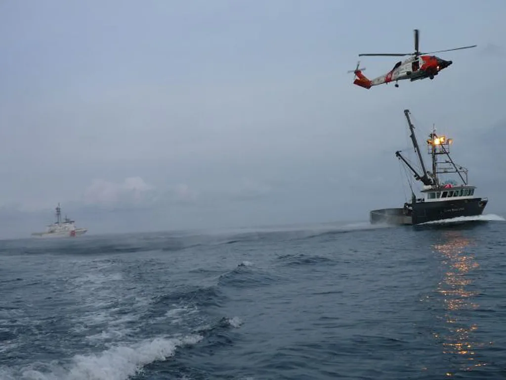
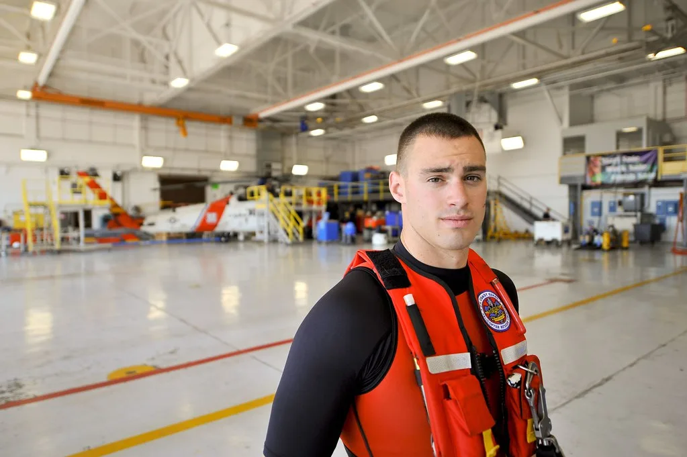

제주 차귀도 해상서 어선 전복…선장 등 2명 실종, 9명 구조
5일 오전 3시 4분께 제주시 한경면 차귀도 북서쪽 약 65㎞ 해상에서 경남 사천 선적 29t급 근해연승어선이 전복되는 사고가 발생했다. 사고 해역 인근에서 조업 중이던 다른 어선들이 신속히 대응하면서 인도네시아인 8명과 베트남인 1명 등 외국인 선원 9명은 모두 구조됐다. 그러나 한국인 선장 1명과 인도네시아인 선원 1명은 아직 실종 상태로, 해경이 수색 작업을 이어가고 있다.
구조된 선원들은 차가운 바닷물에 장시간 노출되면서 저체온증 증세를 호소한 것으로 전해졌다. 다행히 생명에 지장을 줄 정도의 심각한 외상은 확인되지 않았고, 인근 병원으로 옮겨져 치료를 받고 있는 것으로 알려졌다. 사고 선박이 야간에 전복된 탓에 정확한 전복 경위는 아직 파악되지 않았으며, 해경은 생존 선원들을 상대로 당시 상황을 조사하고 있다.
눈에 띄는 대목은 사고 선박의 출항 신고 내용과 실제 승선 인원이 달랐다는 점이다. 해당 선박은 출항 당시 승선원을 8명으로 신고했지만, 실제로는 선장을 포함해 11명이 타고 있었던 것으로 파악됐다. 신고된 인원보다 많은 인원이 승선한 경위에 대해서도 해경 차원의 추가 확인이 필요할 것으로 보이며, 이번 사고를 계기로 어선 승선원 신고 관리 체계에 대한 점검 필요성도 함께 제기되고 있다.

사고 소식이 전해지자 한덕수 국무총리는 해양수산부와 해양경찰청에 가용 가능한 모든 장비와 인력을 동원해 인명 구조를 최우선으로 할 것을 지시했다. 이에 따라 해경은 경비함정과 헬기, 항공기, 해군 함정, 유관기관 선박, 민간 어선 등을 대거 투입해 실종자 수색에 나섰다. 사고 해역에는 서북풍이 초속 12~14m로 강하게 불고 파고도 2m를 넘는 것으로 알려져, 수색 작업이 녹록지 않은 상황이다.
해경 관계자는 기상 여건이 좋지 않은 만큼 수색 범위를 넓히고 야간에도 조명탄 등을 활용해 수색을 계속할 방침이라고 밝혔다. 다만 사고 해역이 육지에서 상당히 떨어진 원해인 데다 기상 악화까지 겹치면서 실종자 생존 가능성에 대한 우려도 함께 나오고 있다. 해경은 기상 상황이 호전되는 대로 수색 인력과 장비를 추가로 투입할 계획이다. 해상에서는 저체온증에 따른 생존 한계 시간이 짧은 만큼, 초동 수색의 골든타임이 지나기 전에 최대한 넓은 해역을 훑어야 한다는 것이 수색 당국의 판단이다.

이번 사고는 외국인 선원이 다수 승선한 원양·근해 어선에서 안전 관리가 여전히 취약하다는 점을 다시 드러냈다는 평가가 나온다. 해경과 해양수산부는 사고 수습과 별도로 유사 사고 재발을 막기 위한 어선 안전 점검과 승선 인원 관리 실태 전반에 대한 점검에 나설 것으로 보인다. 실종자 수색이 장기화할 가능성도 제기되는 가운데, 당국의 수색 작업과 사고 원인 조사 결과에 관심이 쏠린다.
특히 신고 인원보다 많은 선원이 승선한 경위는 이번 사고 조사의 핵심 쟁점 중 하나로 꼽힌다. 근해연승어선 같은 소형 어선은 외국인 선원을 고용할 때 출입국 관리 당국에 별도 신고 절차를 거치도록 돼 있는데, 실제 현장에서는 이런 절차가 제대로 지켜지지 않는 경우가 적지 않다는 지적이 어업계 안팎에서 꾸준히 제기돼 왔다. 해경은 선사 측과 선원 송출 과정 전반을 함께 들여다보며 위법 소지가 있는지도 확인할 방침인 것으로 알려졌다.